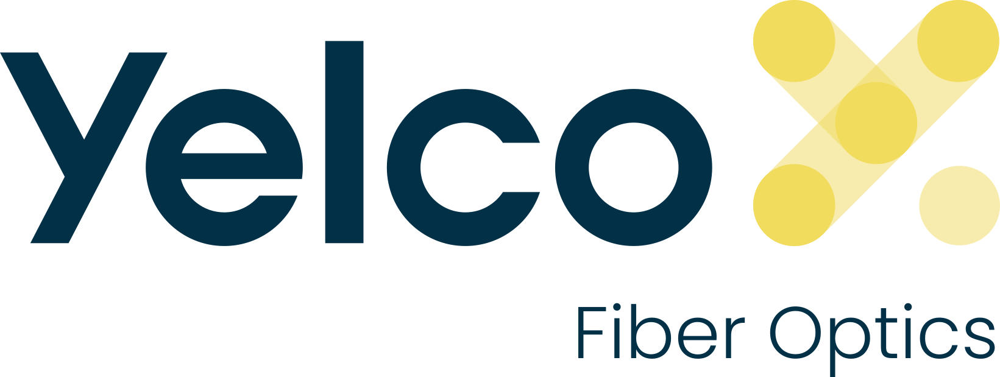

Gerador de imagens para Patchcords
Selecione o Conector Esquerdo, o tipo de Cabo e o Conector Direito.
Digite o comprimento e clique em "Guardar Imagem".
Conector Esquerdo
Tipo de Cabo
Conector Direito
Comprimento do Cabo (m)
Guardar Imagem
© Glauber da Silva Carlos